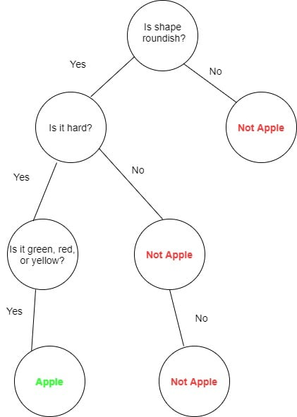

1. Binary Tree
Decision-Making Process (Decision Trees): In business, binary decision trees help make yes/no decisions, like deciding whether to approve a loan or suggest a product. Each node represents a question, and the left and right children represent possible answers (yes or no).
2. Ternary Tree
Ternary Search Algorithm (3-Way Search): In computer science, a ternary search algorithm is used to search within a sorted array by splitting it into three parts. Searching through a large, alphabetically ordered phone directory can illustrate this concept.
3. Perfect Binary Tree
Tournament Bracket (Knockout Style Competitions): In sports tournaments with a knockout format, the competition can be visualized as a perfect binary tree. Each match represents an internal node, with initial participants as leaf nodes.

>4. N-ary Tree
File System (Directory Structure): A typical file system is an N-ary tree where directories can contain multiple files or subdirectories.

5. Balanced Binary Tree
Database Indexing: Databases often use balanced binary trees (like AVL trees or Red-Black trees) for indexing, ensuring that search operations remain logarithmic in complexity.
6. Complete Binary Tree
Tournament Brackets: In sports tournaments, a complete binary tree can represent the structure of matches until a winner is determined.

7. Full Binary Tree
Data Encoding: Full binary trees represent structures in data compression methods, such as Huffman coding, where each character is assigned a binary code based on its frequency.